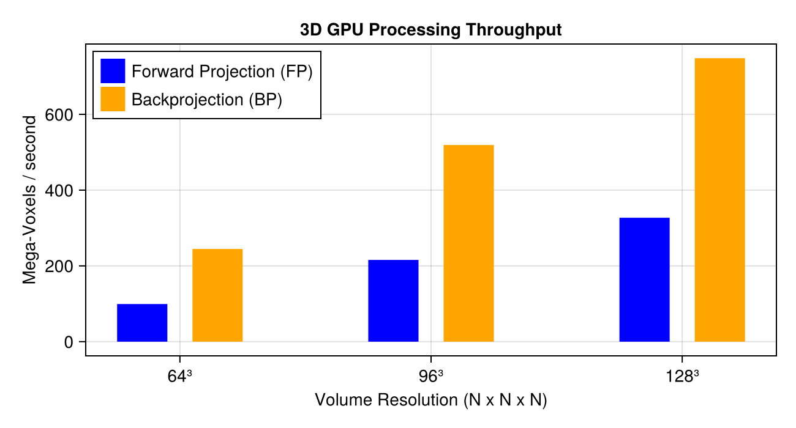
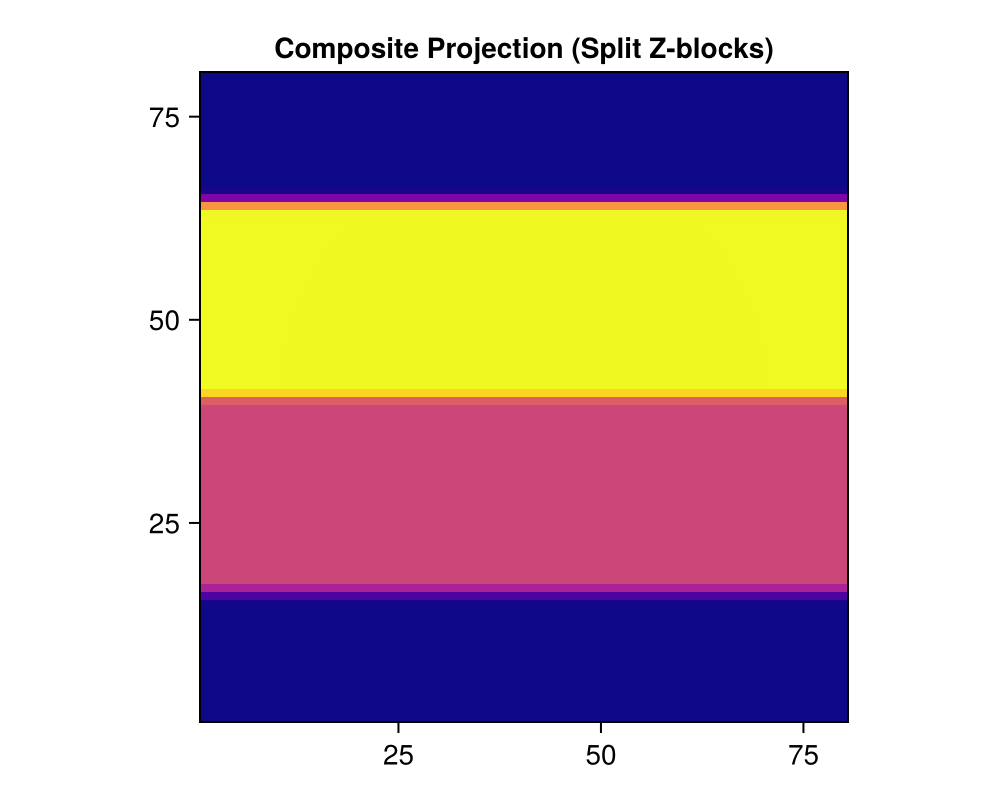

Tutorial 9: GPU Memory Management, Performance Optimization, and Composite Tiled Projection
Zero-allocation In-place API, GPU Throughput Benchmarks, and Tiled Composite Projections for Massive Volumes.
Prerequisites
This tutorial uses Makie (recommended backend: CairoMakie) for visualization. If CairoMakie is not installed in your environment, add it by running using Pkg; Pkg.add("CairoMakie").
1. Introduction
In 3D computed tomography, memory requirements scale cubically with volume resolution: $256^3 \to 512^3 \to 1024^3$ represents an 8x memory surge per 2x resolution increase. High-performance CT workflows therefore rely on key architectural optimizations:
- CUDA Acceleration: Harnessing GPU parallelism for forward/backprojection kernels.
- Eliminating Heap Reallocations: Leveraging in-place APIs (
project!,backproject!) for zero GC overhead. - Overcoming GPU VRAM Ceilings: Slicing and compositing oversized volumes across tiles with
do_composite_FPanddo_composite_BP.
Topics covered in this notebook:
- Benchmarking memory efficiency with
@timeand@allocated. - Comparing Out-of-place vs. In-place speed and allocations.
- Measuring 3D scaling throughput (Mega-Voxels/second).
- Tiled composite forward projection (
do_composite_FP) for volumes exceeding VRAM.
2. Package Loading and Inspecting GPU Information
using AstraToolbox
using CairoMakie
using LinearAlgebra
# Check available GPU information
println("Has CUDA available: ", has_cuda())
if has_cuda()
println("GPU count: ", get_gpu_count())
println("Active GPU device index: ", get_gpu_index())
gpu_info = get_gpu_info()
println("GPU Info: ", isempty(gpu_info) ? "N/A" : gpu_info)
end3. In-Place vs. Out-of-Place Memory Allocation and Speed
We use Julia's @allocated macro to measure heap memory allocated per projection call:
project: Allocates a new array each time (causing heavy GC overhead inside iterative loops).project!: Reuses pre-allocated buffers (Allocation = 0 bytes).
nx, ny = 256, 256
phantom = shepp_logan(nx)
angles = Float32.(range(0, pi, length = 180))
proj_geom = Parallel2DGeometry(angles, 256, 1.0f0)
# Warmup
_ = project(phantom, proj_geom)
# 1. Out-of-place project
time_out = @elapsed for _ in 1:10
_ = project(phantom, proj_geom)
end
alloc_out = @allocated project(phantom, proj_geom)
# 2. In-place project!
sino_buf = zeros(Float32, geom_size(proj_geom))
time_in = @elapsed for _ in 1:10
project!(sino_buf, phantom, proj_geom)
end
alloc_in = @allocated project!(sino_buf, phantom, proj_geom)
println("Out-of-place project:")
println(" Average time: ", round(time_out / 10 * 1000, digits=3), " ms")
println(" Memory allocated: ", alloc_out, " bytes")
println("In-place project!:")
println(" Average time: ", round(time_in / 10 * 1000, digits=3), " ms")
println(" Memory allocated: ", alloc_in, " bytes (Zero Allocation!)")4. 3D Volume Resolution Scaling Benchmark
We benchmark forward projection (FP) and backprojection (BP) times as 3D CBCT resolution scales from $64^3$ to $96^3$ and $128^3$, measuring processing throughput in Mega-Voxels per second.
if has_cuda()
resolutions = [64, 96, 128]
fp_times = Float64[]
bp_times = Float64[]
voxel_counts = [res^3 for res in resolutions]
for res in resolutions
v_test = rand(Float32, res, res, res)
angles_test = Float32.(range(0, 2pi, length = 60))
geom_test = Cone3DGeometry(angles_test, res, res, 800.0f0, 400.0f0; detector_spacing_u = 1.0f0, detector_spacing_v = 1.0f0)
# FP
sino_test = zeros(Float32, geom_size(geom_test))
project!(sino_test, v_test, geom_test; backend = cuda()) # warmup
t_fp = @elapsed project!(sino_test, v_test, geom_test; backend = cuda())
push!(fp_times, t_fp)
# BP
v_out = zeros(Float32, res, res, res)
backproject!(v_out, sino_test, geom_test; backend = cuda()) # warmup
t_bp = @elapsed backproject!(v_out, sino_test, geom_test; backend = cuda())
push!(bp_times, t_bp)
println("Resolution $(res)^3 ($(res^3) voxels): FP = $(round(t_fp*1000, digits=1)) ms, BP = $(round(t_bp*1000, digits=1)) ms")
end
# Throughput plot
fig = Figure(size = (650, 350))
ax = Axis(fig[1, 1], title = "3D GPU Processing Throughput",
xlabel = "Volume Resolution (N x N x N)", ylabel = "Mega-Voxels / second")
fp_throughput = (voxel_counts ./ fp_times) ./ 1e6
bp_throughput = (voxel_counts ./ bp_times) ./ 1e6
barplot!(ax, [1.0, 2.0, 3.0] .- 0.15, fp_throughput, width = 0.25, label = "Forward Projection (FP)", color = :blue)
barplot!(ax, [1.0, 2.0, 3.0] .+ 0.15, bp_throughput, width = 0.25, label = "Backprojection (BP)", color = :orange)
ax.xticks = (1:3, ["64³", "96³", "128³"])
axislegend(ax, position = :lt)
fig
else
println("CUDA is not available. Skipping 3D GPU scaling benchmark.")
end
5. Tiled Composite Projections (do_composite_FP / do_composite_BP)
A $2048^3$ volume consumes 32 GB of memory, exceeding the VRAM capacity of most GPUs (12 GB–24 GB). AstraToolbox.jl's Composite Geometry Module (do_composite_FP / do_composite_BP) slices volumes into spatial tiles or Z-blocks, projecting each block independently and seamlessly summing detector contributions.
do_composite_FP Arguments:
do_composite_FP(volumes, projections; mode=:set)volumes: List of volume pairs[volume_part1 => vg1, volume_part2 => vg2]projections: Projection geometry or sinogram data
if has_cuda()
# Simulate an oversized volume using 2 Z-slice blocks
# Block 1 (Lower half): Z = -16 to 0
# Block 2 (Upper half): Z = 0 to +16
vg_lower = VolumeGeometry3D(64, 64, 16; window = (-32, 32, -32, 32, -16, 0))
vg_upper = VolumeGeometry3D(64, 64, 16; window = (-32, 32, -32, 32, 0, 16))
# Distinct patterns in each block
v_lower = fill(0.5f0, 64, 64, 16)
v_upper = fill(1.0f0, 64, 64, 16)
# Projection geometry
angles_comp = Float32.(range(0, 2pi, length = 36))
cg_comp = Cone3DGeometry(angles_comp, 80, 80, 800.0f0, 400.0f0; detector_spacing_u = 1.0f0, detector_spacing_v = 1.0f0)
# Execute tiled composite projection
# Contributions from both blocks are automatically accumulated on the detector
sino_composite = do_composite_FP(
[v_lower => vg_lower, v_upper => vg_upper],
cg_comp
)
println("Composite projection finished! Output sinogram size: ", size(sino_composite))
# Visualize composite projection
fig = Figure(size = (500, 400))
ax = Axis(fig[1, 1], title = "Composite Projection (Split Z-blocks)", aspect = DataAspect())
heatmap!(ax, sino_composite[:, 1, :], colormap = :plasma)
fig
else
println("CUDA is not available. Skipping composite projection test.")
end
6. Summary: Best Practices for Large-Scale Tomography
- Pre-allocate Memory: Always use in-place methods
project!andbackproject!within iterative reconstruction loops to eliminate per-step array allocations and GC stalls. - Type Stability: Keep all arrays and floating-point parameters strictly as
Float32to prevent implicit conversions and kernel execution slowdowns. - Overcome GPU Memory Limits: Utilize
VolumeGeometryROI windows anddo_composite_FP/do_composite_BPtiling to reconstruct volumes that exceed available GPU VRAM.